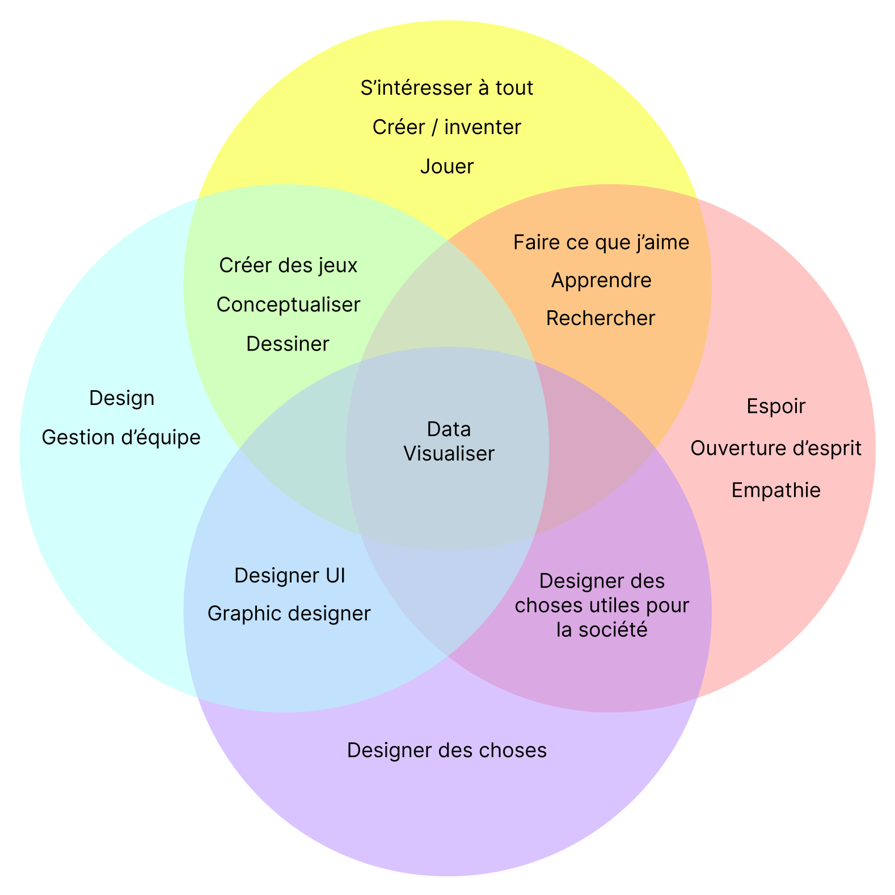

À propos de moi
Bienvenue sur mon blog dédié à la visualisation de données !
Je m’appelle Emile Donzel et depuis toujours, je suis passionné par la création, le jeu et l’idée d’explorer des façons de rendre le monde plus clair et compréhensible. Cela s’exprime dans le domaine professionnel par la création de visualisations de données claires, esthétiques et fonctionnelles, qui transforment des informations complexes en récits visuels compréhensibles.
Ikigai

La visualisation de données
Pourquoi la visualisation de données ?
La visualisation de données est bien plus qu’un simple graphique ou diagramme. C’est une discipline qui se situe au croisement de plusieurs domaines que j’apprécie énormément :
- Art et Design : Créer des visualisations esthétiques et engageantes. Cela nécessite des compétences en design graphique et en UI (interface utilisateur) pour attirer l’œil et garantir une navigation intuitive.
- Science des données : C’est le travail de récolte, de traitement et d’analyse des données pour s’assurer qu’elles sont fiables et pertinentes. L’objectif est de transformer ces données brutes en informations exploitables.
- Communication : Une bonne visualisation raconte une histoire. Elle aide à partager des idées complexes de manière simple et accessible, en permettant au spectateur de comprendre rapidement l’essentiel.
Les différentes taxonomies dans la visualisation de données
Le monde de la visualisation de données est vaste et se divise en plusieurs taxonomies ou catégories selon l’objectif, le format ou l’audience visée :
- Visualisations exploratoires : Ces graphiques sont utilisés pendant le processus d’analyse pour découvrir des patterns ou des insights dans les données. Par exemple, un nuage de points pour visualiser des corrélations.
- Visualisations explicatives : Celles-ci racontent une histoire précise et sont conçues pour une audience spécifique. Des exemples courants incluent les infographies ou les rapports interactifs.
- Visualisations interactives : Ces outils permettent à l’utilisateur de naviguer, filtrer ou explorer des données par lui-même, comme dans les dashboards.
- Visualisations artistiques : Quand les données sont utilisées comme médium pour créer une œuvre d’art. Elles ont souvent un objectif esthétique ou provocateur plus qu’informatif.
SSG
Pour ce projet, j’ai utilisé le SSG Hugo car il nous a été présenté en cours. J’avais commencé par créer un site avec le SSG 11ty mais la manière de créer les site me convenait moins.
Le thème que j’ai choisi s’appelle PaperMod et je l’ai choisi car il est sobre, simple et n’a pas d’éléments superflus dont je n’ai pas l’utilité.
De plus, il se rapproche graphiquement beaucoup de Notion qui est un outil que j’aime bien et avec lequel je travaille beaucoup alors c’est pour moi un petit plus.